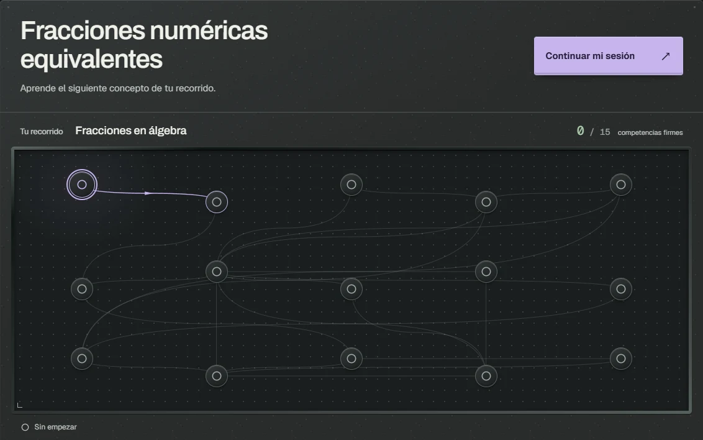

Matemáticas,
desde tu punto.
Nexora te propone qué estudiar según lo que vas demostrando.
¿Recibiste la invitación? Empieza aquí.

Así se usa Nexora.
48 segundos · con músicaLeer el recorrido
¿Por dónde empiezo? Elige tu inicio: conceptos básicos o nivelación. Hoy te propone una sesión. Lee, responde y consulta las ayudas. Practica lo aprendido y vuelve para comprobarlo. Consulta tu recorrido en Mapa. En Insolitus puedes jugar duelos de cartas contra un bot. Entra al piloto, prueba Nexora y cuéntanos cómo te fue.
Elige tu inicio
Empieza por las bases o haz la nivelación.
Sigue tu sesión
Abre Hoy. Lee, responde y usa las ayudas.
Practica y vuelve
Aplica lo aprendido y compruébalo más adelante.
También hay
cartas.
Insolitus: duelos contra un bot, dentro de Nexora.
El juego acompaña el estudio. Jugar no cambia tu avance en matemáticas.
Pruébala. Danos tu opinión.
Es un piloto: habrá cosas por mejorar.
Cuéntanos qué te ayudó y qué te confundió.